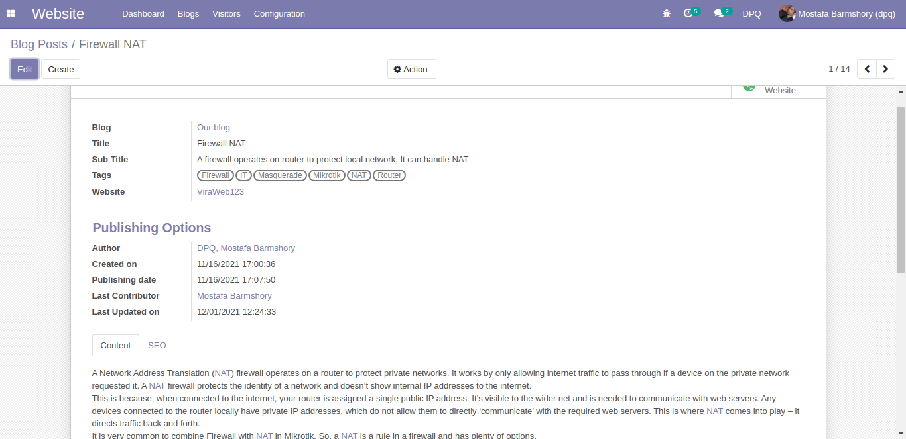
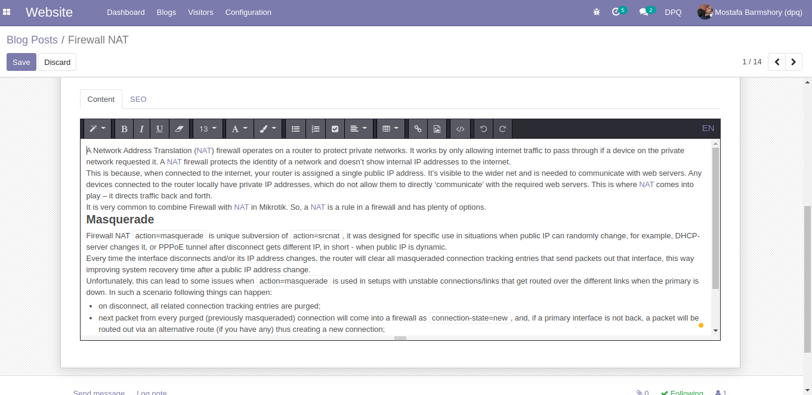
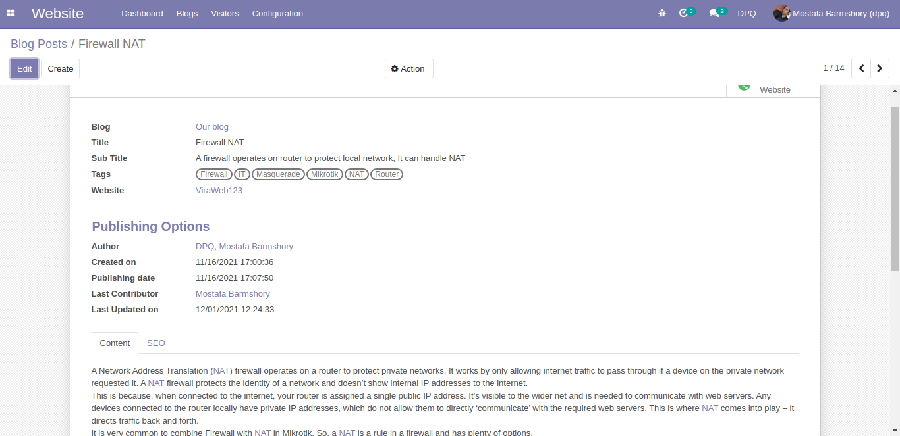
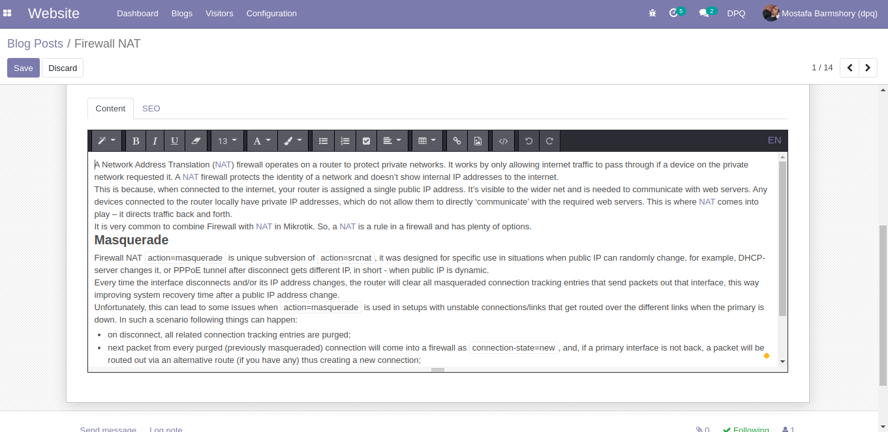

Blog Content Editor: Edit posts content from backend
This module adds a simple HTML editor into the blog post form used to direct edit. In some cases, especially professional content marketing, you have to manage blogs posted in a central place. You need a dashboard to manage states, publish dates, task management, and direct editing of a post. By using this module, editors can open a blog post and start to write content.
Screenshots
 


